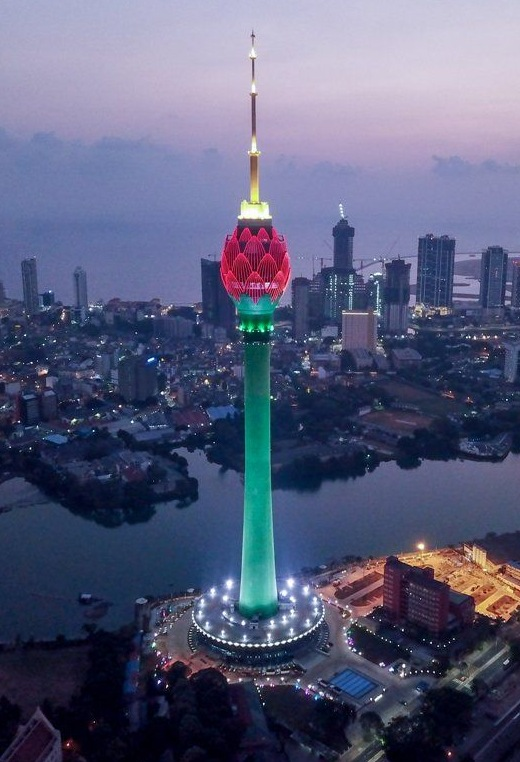
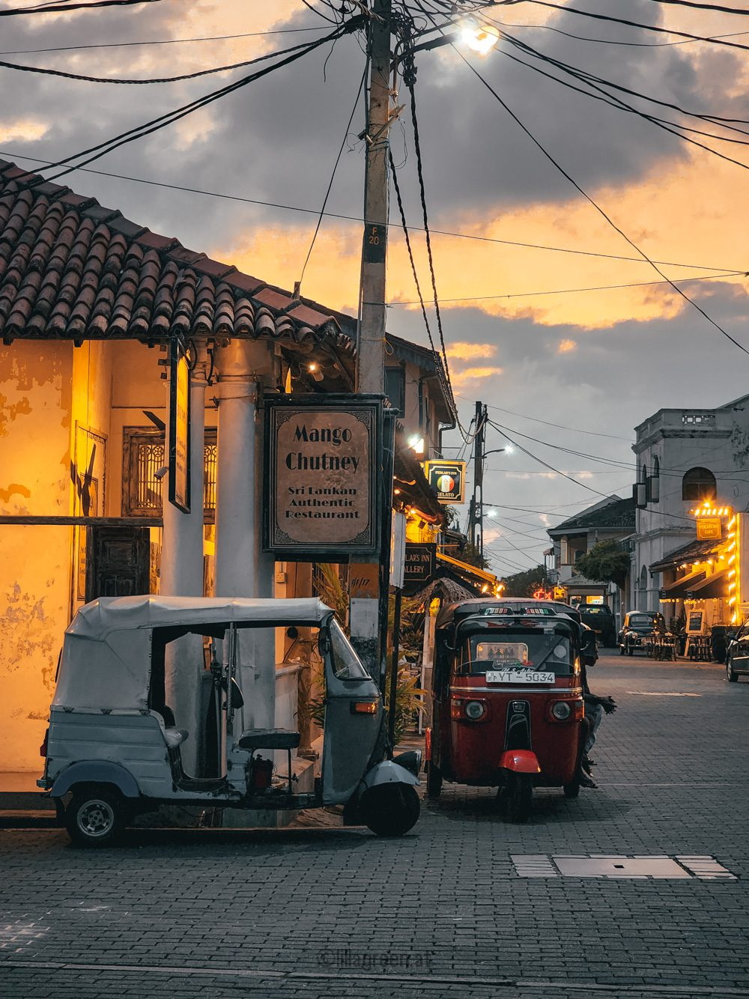
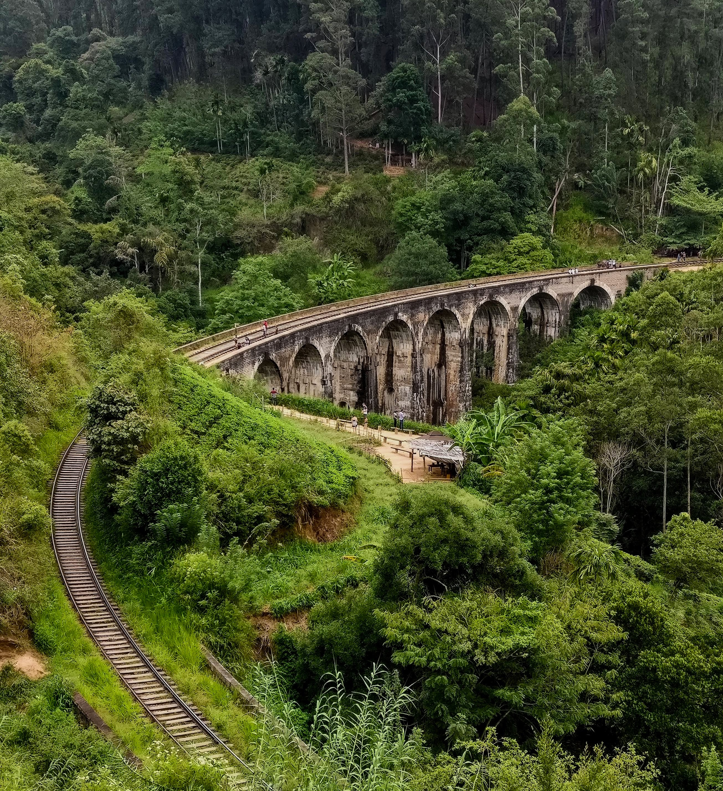
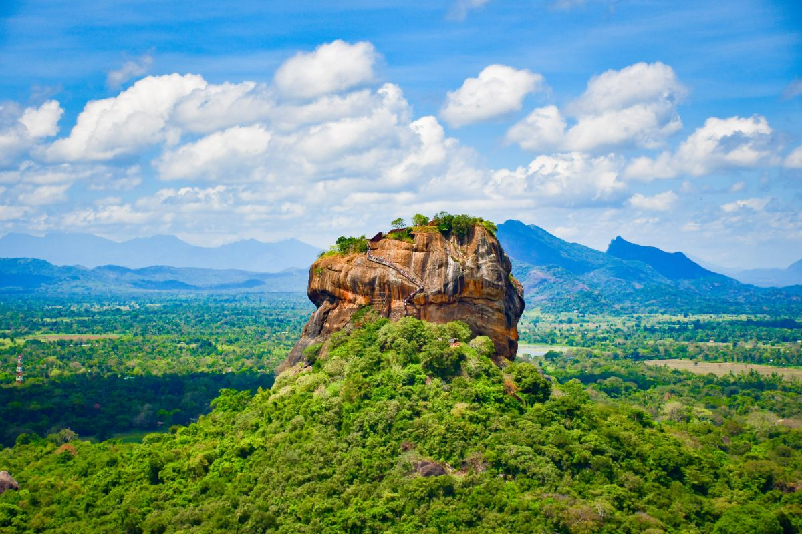

Island country in South asia
Join our community and share your journey through the stuning vistas of this isaland paradise.
Discover the beauty of Sri Lanka through our curated image collection.
|  |  |  |
Your Gateway to Adventure
Authentic Experiencesimmerse yourself in local traditions and explore hidden gems. |
Stunning LandscapesBreathtaking views from lush mountains to pristine beaches await you. |
Cultural RichnessDelve into the rich history and vibrant culture of Sri Lanka. |
"An unforgettable experience that captured the essence of Sri Lanka!" Jane Doe, Travel Enthusiast |
 |
| Category | Details | |
|---|---|---|
| Value | Additional Information | |
| Office Name | Democratic Socialist Republic of Sri Lanka | |
| Capital | Sri Jayawardanapura Kotte | (administrative), Colombo(commercial) |
| Area | 65,610 sq km | (25,332 sq miles) |
| Population | Approximately 22 million | (2023 estimate) |
| Languages | Sinhalese, Tamil, English | (link language) |
| Currency | Sri Lankan Rupee(LKR) | |
| Climate | Tropiacal climate: two monsoon seasons(May to September and December to February) | |
| Major Religions | Buddhism | 70% |
| Hinduism | 12.6% | |
| Islam | 9.7% | |
| Christianity | 7.6% | |
| Independence Day | February 4, 1948 | |
| Goverment Type | Unitary presidential constitutional republic | |
| Major industries | Textiles, tea, rubber, tourism, agriculter, fisheries, software development | |
| UNESCO World Heritage Sites | 8 sites, including the Ancient City of Sigiriya, Sacred City of Kandy and Old Town of Galle | |
| Natural Resources | Gemstones, graphite, mineral sands | Limstone, clay, hydropower |
| Cultural Festivals | Vesak, Sinhala and Tamil New Year, Christmas | |